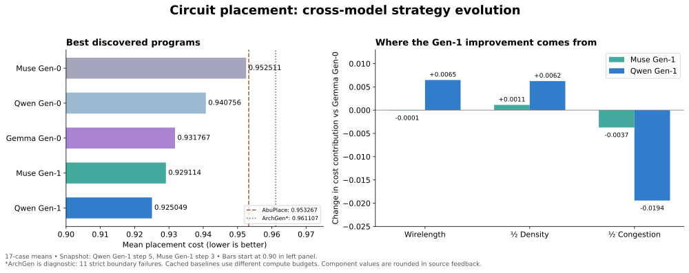

Three independent Gen-0 searches. Two branches evolving Gemma’s program pool.
Random local moves; separate hard/soft macro sampling; shrinking radius and batch sizes.
Staged annealing; shrinking candidate batches; perturb-and-restart when stalled.
Probe starting layouts; connectivity-guided moves; increasingly favor congestion reduction.
Gemma’s 567-program pool ↓ branches into two independent searches
Direct child of Gemma’s final winner. Same-net pin proposals; up to 132 candidates; revised probing and temperature.
Muse’s own Gen-0 weights + fresh optimizer.Descends from another Gemma-pool branch. Ten proposals per batch; stronger congestion-weighted search acceptance; no start-probing phase.
Qwen’s own Gen-0 weights + fresh optimizer.
Select a program. Positive savings mean lower placement cost than Gemma Gen-0.
| Case | Gemma Gen-0 | Selected program | Cost saved | Improvement |
|---|
Snapshot, not live telemetry. One seed per case, 300-second candidate placement budget with cached XPlace starts. These charts describe complete winning programs; they do not isolate the causal contribution of individual code edits. AbuPlace and ArchGen baseline compute budgets differ.